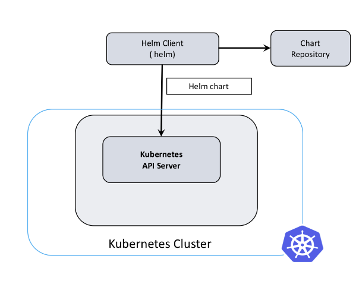

1.3 Algo d'installation des manifests¶
Nous allons avoir recours ici à deux nouvelles notions de l'écosystème de kubernetes qui sont
- Les manifests que l'on utilise pour décrire une ressources (déploiement, service, pods, ingress,...) à déployer dans le cluster avec la commande
kubectl
Pour l'exemple cette commande kubectl get pods -n kube-system récupère la liste des pods dans le namespace du système de k3s
Voici le retour qu'elle nous donne :
"local-path-provisioner-84bb864455-8dz4g 1/1 Running 0 7h58m",
"svclb-traefik-qv89r 2/2 Running 0 7h57m",
"coredns-574bcc6c46-pr6vq 1/1 Running 0 7h58m",
"metrics-server-ff9dbcb6c-ncr4n 1/1 Running 0 7h58m",
"traefik-56c4b88c4b-p4xt6 1/1 Running 0 7h57m",
Les commandes kubectl fonctionnent tout le temps de la sorte kubectl <action> <resource> -n <namespace> -o <format>
<action>soit une action CRUD :edit,get,describe<resource>pour en savoir plus sur les différentes ressources disponibleskubectl api-resources. Nous aurons majoritairement recours àdeployment,service,ingress,pod,secret,configmap-oest très pratique quand on veut un vrai détail sur les ressources avec notamment le-o yaml
La commande pod est un peu particulière : voici un exemple utilisant le retour au-dessus en exemple :
kubectl get pods -n kube-system traefik-56c4b88c4b-p4xt6(on précise le nom complet du pod)Astuce le flag
-Apermet de regarder tous les pod sur n'importe quel namespace. Par exemplekubectl get po -A(poest un diminutif depods, on a aussi par exemplesvcpour service)
- Helm un gestionnaire de paquet pour distribuer des charts (ou package) contenant des suites de manifest kubernetes à déployer sur le cluster.
Pour cela nous aurons recours à cette utilisation au travers de k3s et d'un module
helm.cattle.io/v1permettant le deploiement automatique de resources kubernetes.

Donc dans playbook/roles/kubeapps/tasks nous allons travailler sur ces éléments de ansible :
-
tasks/main.yaml: déclenche certaines suites de tâches en fonction de l'état choisi dans les variables de configuration. Elles sont définies dans l'ordre : -
Les variables par défaut
default/main.yaml. On pourra par la suite les surcharger avec celle du playbook (inventories/{env}/all.yaml) -
Les variables par défaut
default/vars.yamlsont comme default/main.yaml mais pour des variables non configurables. -
templates/qui contient des fichiers.j2ou templatesjinjareprésentant plusieurs manifests kubernetes. -
tasks/manifests.yaml: celui-ci va s'occuper de placer les manifests kubernetes dans le répertoire/var/lib/rancher/k3s/server/manifestspour que k3s déploie automatiquement les ressources décrites dans ceux-ci.
Source pour plus d'informations doc k3s
On peut remplir le fichier d'entrée comme ceci :
Astuce : Voici la commande molecule qui permettra de lancer seulement les taches avec le
tags: [kubeapps]ceci une fois notre playbook utilisable :
Puis allons configurer une suite de tâches pour installer les manifests qu'ils soient une ressource api ou un chart helm.
On commence par mettre en place une boucle ansible prenant en paramètre une liste de dictionnaires python. Ceux-ci comportes comme sous propriétés qui définissent la façon dont notre programme se comporte :
src: un fichier manifest au formatyaml.j2à déployer sur le noeud. Ce format donne la possibilité d'intégrer lesvariablesetfactsansible.ns: pour un namespace sur lequel ajouter le chart et pouvant aussi être un déploiement Kubernetes dont il va valloir attendre le succès.deploy: Pour préciser le nom du déploiement ci celui-ci n'est pas le même que le namespacecondition: Simple booléen pour executé ou non le manifest
Info: Les facts sont des variables définis dynamiquement à partir de l'environnement ou de ce qu'on décide de conserver de nos traitements pendant le processus ansible
Pour expliquer l'utilisation du module ansible kubernetes.core.k8s_info. On attend que le retour de la commande kubectl reformatés en json atteigne des conditions.
Ces conditions sont ici testées toutes les 5 secondes (wait_sleep) et vont rendre une erreur si elles ne sont toujours pas bonnes au bout de 350s.
Voici ensuite ce qui est rendus entièrement par le deployment_infos dans la directive register qui permet à ansible de stocker ce fact / variable.
Voici un exemple de retour pour un déploiement fonctionnel pour mieux comprendre.
"conditions": [
{
"lastTransitionTime": "2022-12-05T15:11:56Z",
"lastUpdateTime": "2022-12-05T15:11:56Z",
"message": "Deployment has minimum availability.",
"reason": "MinimumReplicasAvailable",
"status": "True",
"type": "Available"
},
{
"lastTransitionTime": "2022-12-05T15:11:46Z",
"lastUpdateTime": "2022-12-05T15:11:56Z",
"message": "ReplicaSet \"dex-5bd6ffdfd\" has successfully progressed.",
"reason": "NewReplicaSetAvailable",
"status": "True",
"type": "Progressing"
}
],
On remarque que le status à "True" signigie que nous avons réussi, que la reason indique qu'un replica à été créé. Un replica est une instance de pod dans un contexte où l'on peut dupliquer les pod pour répartir la charge.
Note la commande k8s_info donne tous les états par lesquels sont passé le pod. On voit ici le passage de
AvailableàProgressingqui signifie que le déploiement est fonctionnel. (le wording est un peu étrange, mais c'est comme ça).
Revenons à la déclaration de la boucle des manifests pour ajouter le la liste loop que l'on laisse avec des null en propriétés pour l'instant.
De plus le when permettra de ne pas exécuter certains manifests en fonction des conditions que l'on aura définies avec condition.
| playbook/roles/kubeapps/tasks/manifests.yml | |
|---|---|